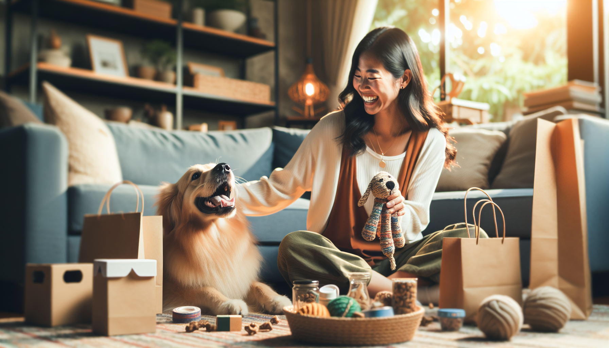

Every dog parent knows the feeling: you want to give your pup the world, but your budget has other ideas. The good news? Spoiling your dog does not have to mean expensive gadgets, luxury beds, or weekly shopping sprees. In fact, most dogs care far more about your time, attention, comfort, and a few fun surprises than they do about the price tag.
If you have been wondering how to spoil your dog without breaking the bank, you are in the right place. Whether you are a devoted pet owner, a dog lover shopping for a thoughtful gift, or someone who simply wants to make their pup feel extra special, there are plenty of affordable ways to add joy to your dog’s daily life. From DIY enrichment to personalized touches, small gestures can make a big impact.
Here are practical, heartfelt, and budget-friendly ideas to help you pamper your dog while keeping your wallet happy.
It is easy to assume spoiling your dog means buying more stuff, but for most pups, quality time is the ultimate treat. Dogs thrive on connection, routine, and shared experiences. A little extra attention can feel like pure luxury to your furry best friend.
Try building simple moments of joy into your week. Take a slightly longer walk through a new neighborhood, spend 15 minutes playing fetch in the yard, or dedicate time to belly rubs and cuddle sessions. If your dog enjoys learning, a short positive training session can also feel rewarding and mentally stimulating.
Here are a few free or low-cost ways to make your dog feel special:
These simple experiences strengthen your bond and cost little to nothing. For many dogs, that is the best kind of spoiling.
Dogs love novelty, but that does not mean you need to constantly buy new toys. Household items can become exciting enrichment tools with just a little creativity. DIY dog entertainment is one of the easiest ways to spoil your dog on a budget while keeping them mentally engaged.
For example, an old T-shirt can be braided into a tug toy. A cardboard box can become a sniff-and-search game by hiding treats inside crumpled paper. Even a muffin tin and a few tennis balls can turn snack time into a fun puzzle challenge.
Affordable DIY enrichment ideas include:
Always supervise your dog with homemade toys and choose materials that are safe for their size and chewing habits. The goal is not perfection. It is fun, stimulation, and variety without unnecessary spending.
Spoiling your dog can also mean making everyday life a little more comfortable. You do not need to buy an expensive designer bed to create a cozy environment. Small upgrades around the house can help your dog feel secure, relaxed, and loved.
Add a soft blanket to their favorite resting spot. Refresh an older bed with a washable cover. Set up a quiet corner where your dog can nap undisturbed. In colder months, a warm throw or cuddly mat can make a huge difference. In warmer weather, a cooling mat or shaded lounging area can feel like a real treat.
Other budget-friendly comfort ideas include:
Comfort does not have to be costly. Often, it is the thoughtful details that make your dog’s world feel extra special.
Treats are a classic way to spoil your dog, but store-bought options can add up quickly. One budget-friendly solution is making simple homemade dog treats using dog-safe ingredients you may already have in your kitchen. Peanut butter, pumpkin, oats, banana, and sweet potato are all popular choices for easy recipes.
If homemade treats are not your style, you can still save money by shopping smarter. Buy treats in larger quantities when they are on sale, compare price per ounce, and look for multipurpose options that work for both training and rewarding. You can also break larger treats into smaller pieces. Your dog will still be thrilled, and your bag will last much longer.
Keep these budget treat tips in mind:
Giving your dog a yummy surprise does not have to mean overspending. A little planning goes a long way.
There is something especially heartwarming about personalized pet products. They make everyday items feel meaningful, whether you are shopping for your own dog or searching for the perfect gift for a fellow dog lover. Best of all, personalized gifts do not have to be extravagant to feel special.
A custom bandana, name tag accessory, pet mat, ornament, or keepsake can turn an ordinary day into a memorable one. Personalized products are also wonderful for birthdays, gotcha days, holidays, and new puppy welcomes. They show thoughtfulness and love while staying within a realistic budget.
When choosing personalized pet gifts, look for items that are both cute and practical. That way, your dog gets something useful, and you get more value for your money. A customized accessory for walks, home decor featuring your pup’s name, or a special item for their sleeping area can all feel like a treat without being over the top.
These kinds of thoughtful details help celebrate your dog’s unique personality, and they are often much more memorable than generic pet store purchases.
Dogs adore routine, and turning ordinary moments into special rituals is a powerful way to spoil them. The beauty of a routine is that it costs almost nothing, yet it gives your dog something to look forward to every single day.
Maybe your dog gets a mini treat after their evening walk, a Saturday morning park visit, or a bedtime tuck-in with their favorite blanket. Maybe Sunday becomes “dog date day” with extra playtime and photos. These repeated moments build happiness and anticipation, and they make your dog feel secure and cherished.
Simple routine-based ways to spoil your dog include:
The key is consistency. Dogs love knowing that something good is coming, especially when it involves time with their favorite person.
When you strip away the marketing and impulse purchases, spoiling your dog really comes down to one thing: making them feel happy, safe, engaged, and loved. That can absolutely happen on a budget. In fact, some of the best ways to pamper your pup are the simplest ones.
Instead of buying everything at once, think intentionally about what your dog enjoys most. Are they food-motivated? Focus on affordable homemade treats and fun food puzzles. Do they love comfort? Upgrade their favorite nap spot. Are they obsessed with outdoor time? Plan more sniff-filled walks and mini adventures. Tailoring your efforts to your dog’s personality helps you spend wisely and give them experiences they truly enjoy.
This is also helpful for gift shoppers. If you are buying for a dog owner, a thoughtful personalized product or a practical item with a custom touch can feel much more meaningful than something flashy and expensive. Budget-friendly does not mean less special. It often means more personal, more intentional, and more memorable.
If you have been looking for ways to spoil your dog without breaking the bank, remember this: your dog is not keeping score. They do not need constant luxury to feel adored. A comfy place to rest, engaging playtime, tasty treats, fun routines, and personalized touches can make their life feel incredibly rich.
The best part is that these affordable ideas are not just easier on your budget. They also create deeper connection, more joyful moments, and lasting memories with your pup. And really, that is what spoiling your dog is all about.
If you are ready to add a thoughtful, budget-friendly touch to your dog’s life or find a meaningful gift for a fellow dog lover, shop personalized pet products at SnoutAndAbout on Etsy.